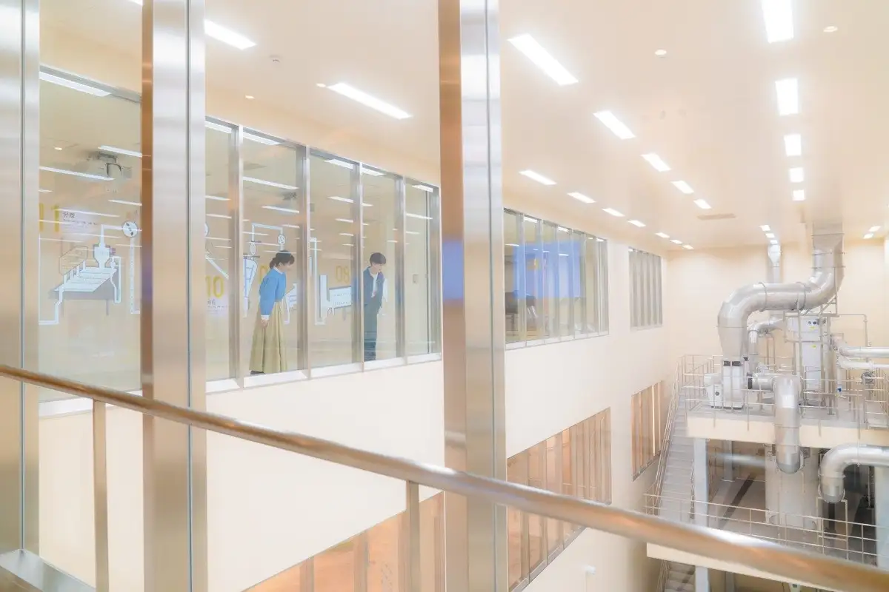
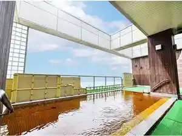
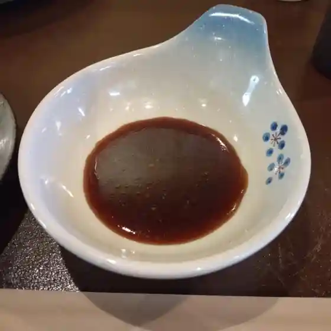
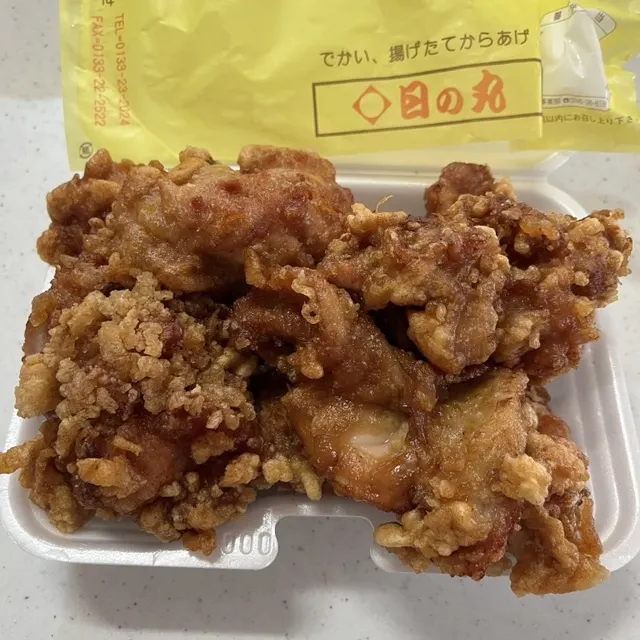
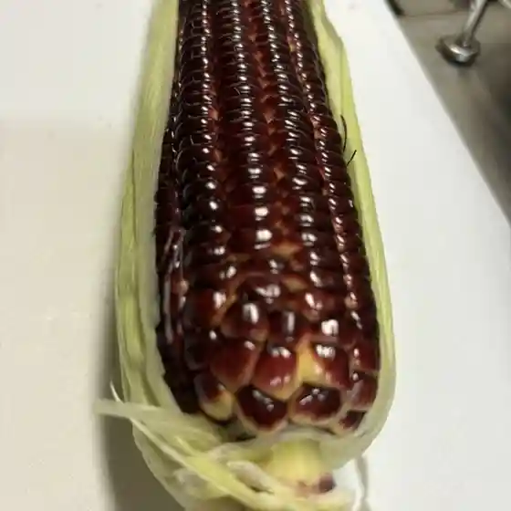
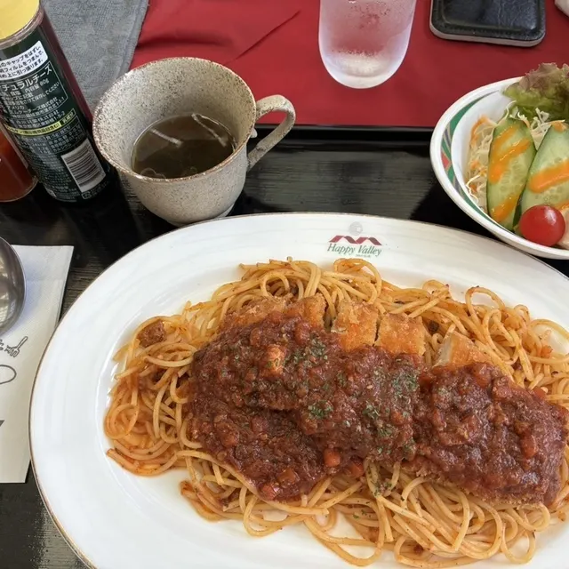
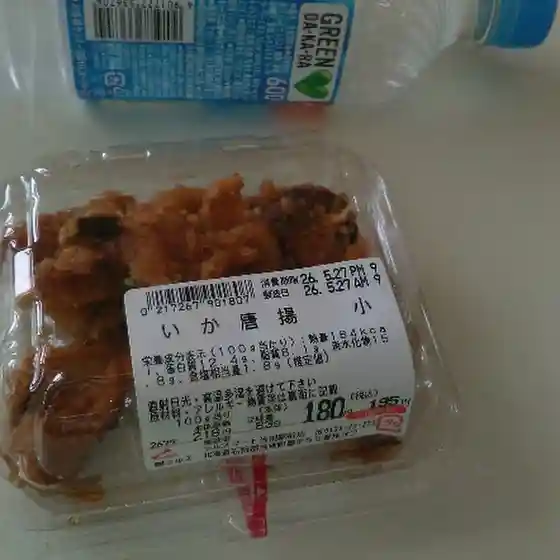
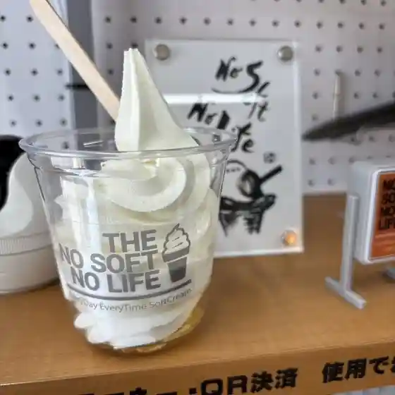
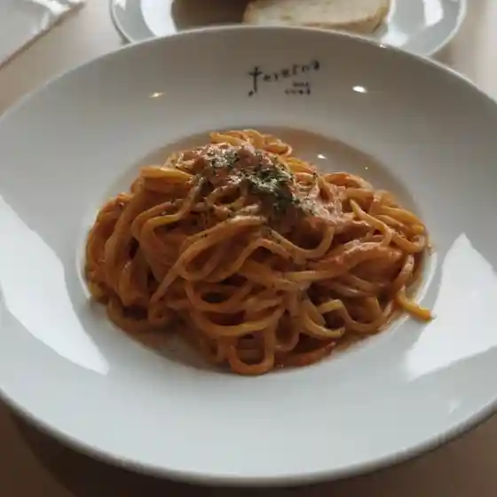
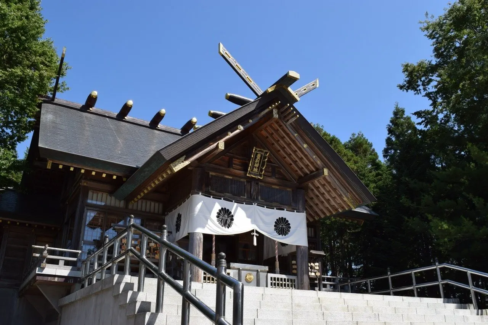

Tobetsu
Tobetsu · Hokkaido
Tobetsu
Highlighted on the Hokkaido map.

Stay
ふとみ銘泉 万葉の湯

Futomi Meisen Manyou No Yu
Dining
焼肉牛牛 当別本店

Yakiniku Ushi Ushi Toubetsu Honten
日の丸亭 当別店

Hinomaru Tei Toubetsu Mise
当別ふれあい倉庫 赤れんが6号 直売コーナ―

Toubetsu Fureai Souko Aka Renga 6 Gou Chokubai Koonaa
まんぷく園

Manpuku Sono
ハッピーバレーゴルフクラブ

Happiibareegorufukurabu
ラルズマート 当別駅前店

Raruzumaato Toubetsu Ekimae Mise
ノーソフト ノーライフ

Noosofuto Nooraifu
カフェ テルツィーナ

Kafe Terutsuiina
HIAR TASTE
Hiar Taste
青山のさんさい食堂
Aoyama Nosansai Shokudou
辻野商店 つじの蔵
Tsujino Shouten Tsujino Kura
カナディアン
Kanadian
双葉DINING
Futaba Dining
Fleurs des Champs
Fleurs Des Champs
スイーツガーデン ポポ
Suiitsugaaden Popo
りらっくす
Rirakkusu
紙ひこうき
Kami Hikouki
COFFEE SANATIC
Coffee Sanatic
鮨銀鱗
Sushi Ginrin
はなポッケ 道の駅店
Hana Pokke Michi No Eki Mise
ひらで
Hirade
藤澤製菓
Fujisawa Seika
レストラン Ari
Resutoran Ari
かばと製麺所
Kabato Seimen Tokoro
Sights
Roizukakao & Chokoretotaun
Roizukakao & Chokoretotaun
Tobetsu Shrine

Tobetsu Shrine